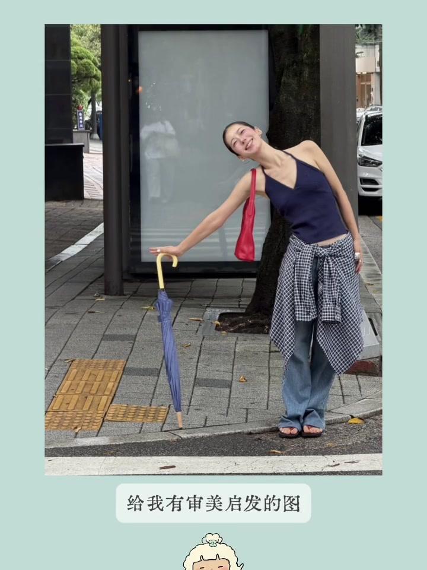
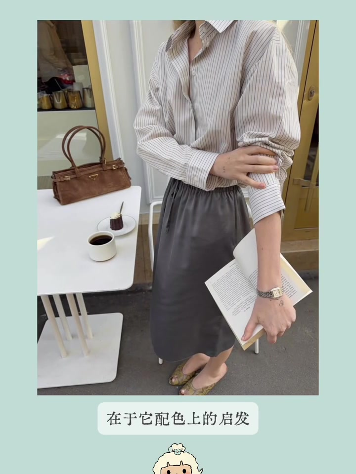
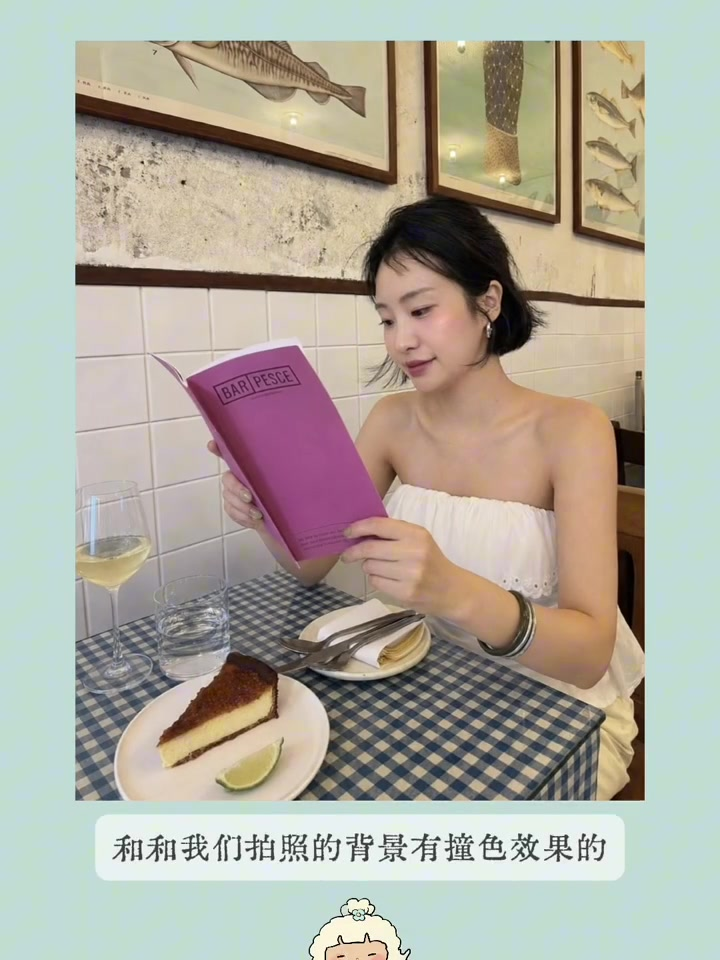
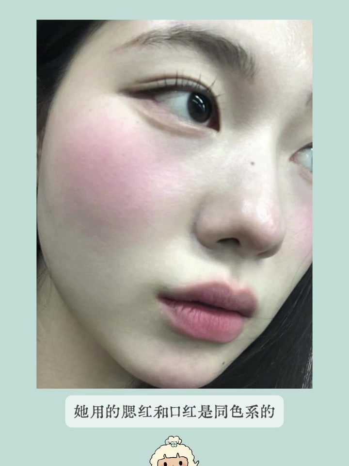
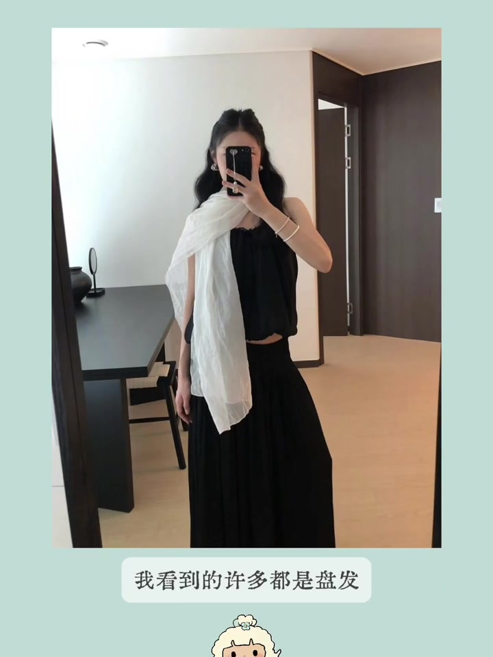
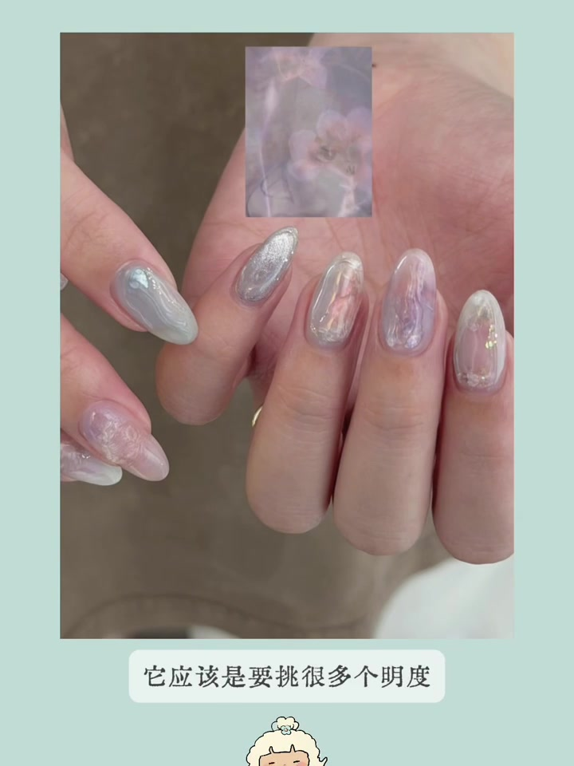
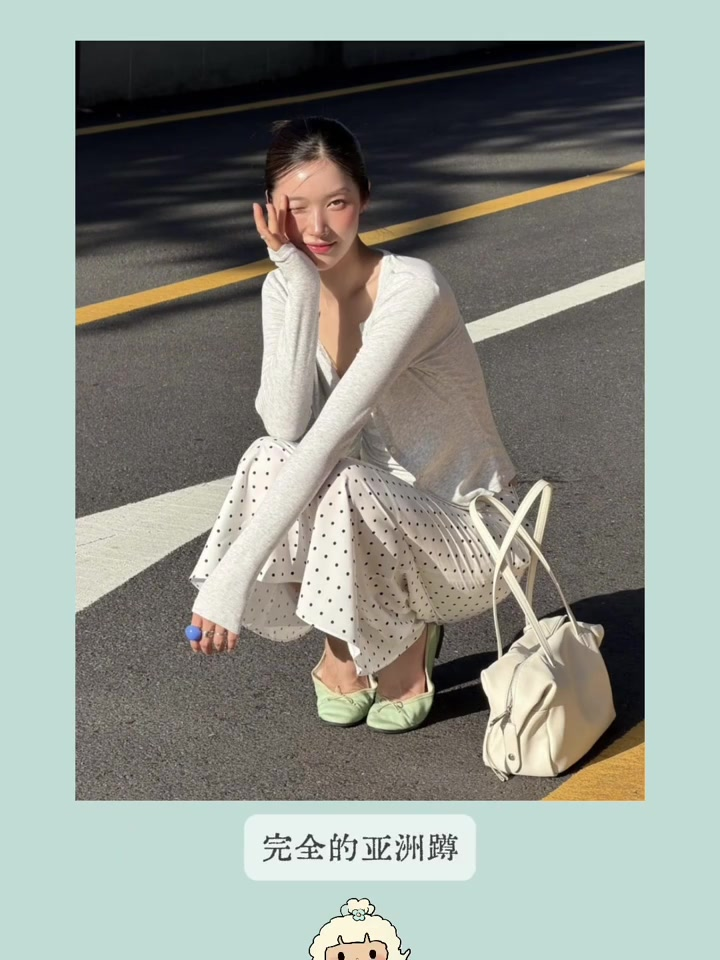
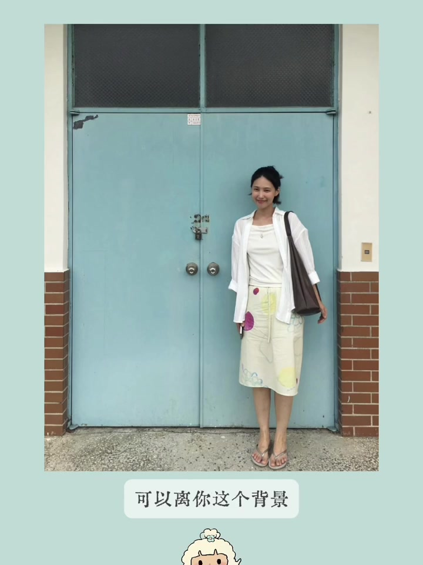

内容要点
视频是博主在 Instagram 上刷到的多张参考图审美作业。她不是逐张复述画面，而是按「这张图教会我什么」拆解：配色、单品呼应、妆容位置、发型配饰，以及拍照时怎样用背景和姿势服务整体观感。
知识结构
多张参考图串联，每张对应一个具体启发，而非笼统夸好看。
冷色主体 + 暖色包鞋点缀；衬衫系法、鞋帽配饰决定风格完成度。
餐厅用道具和背景撞色；腮红位置、同色系唇颊与眼下细节。
薄丝巾配公主头；美甲混色；蹲姿垫脚；浅蓝背景需后退保肤色。
审美训练的关键不是背公式，而是每张图只提炼 1–2 个可迁移的观察点：哪里形成视觉焦点、冷暖如何分配、基础款靠什么提亮、拍照时背景与肤色如何兼顾。
第一张：正红包与黄蓝伞形成视觉焦点
博主认为这张图最抓眼的是正红色包包，以及黄蓝拼色雨伞——两者共同构成出片焦点。穿搭上，小格子衬衫系在腰间带来松弛感；衬衫与半裙都选偏冷色，半裙色还与衬衫细条纹一致，而鞋子和包包用暖色形成「暖嘴状」对比。银色手表与表带则与身上冷色主体保持和谐。

克莱因蓝鞋、白发圈与背景撞色
第二张的亮点在克莱因蓝 805 鞋、发型和白色发圈——若换成普通白鞋或低发髻，原图的风格感会弱很多。博主还提到拍摄时故意选蓝色撞黄色背景，强化画面层次。

餐厅拍照：向场景借撞色道具
第三张的启发是：在餐厅拍照时，可以主动找与背景有撞色效果的亮色物品——例如女生手里的粉紫色菜单，与蓝白格纹桌布形成对比；身后薄荷绿画作也与红紫色系形成今年夏天很吸睛的组合。

妆容：同色系唇颊与眼下腮红位置
第四张侧重眼妆与腮红。女生唇颊同色系，鼻尖和下巴也有腮红；更细的是在下眼睑靠近睫毛根部扫了一点粉色，让整体妆面更有氛围、更显「楚楚可怜」——这是可复用的位置细节，而非单纯换产品。

基础穿搭靠包鞋提亮色系
当上下装都偏基础时，博主建议把色彩张力放在包和鞋：红色系可用不同饱和度或不同明度；示例中是淡绿色鞋配抹茶绿包，博主拍照还会刻意找带绿色元素的背景，让画面更丰富。

薄丝巾与公主头：比大光明更易尝试
第五张关于今年流行的薄丝巾配饰。博主观察到很多人用盘发或大光明，但薄丝巾其实不太适合头顶过于蓬松或披发——这张图的公主头更利落，搭配丝巾有「打理过的精致感」，相对不那么挑人。

美甲、戒指撞色与蹲姿拍照
第六张是博主自己的美甲作业：多明度、多饱和度接近的颜色混色，营造梦幻夏日感。另一张参考里，克莱因蓝戒指与地上黄色色块撞色，成为视觉焦点。蹲姿方面，博主建议学参考图把脚垫起一点，不要完全亚洲蹲，身体会更舒展。

浅蓝大块背景：后退约五米保肤色
最后一张关于浅蓝色大面积背景：若紧贴拍摄，相机自动白平衡和曝光容易把人拍暗。博主建议离背景大约五米，让色块在画面占比缩小，肤色会更通透。
